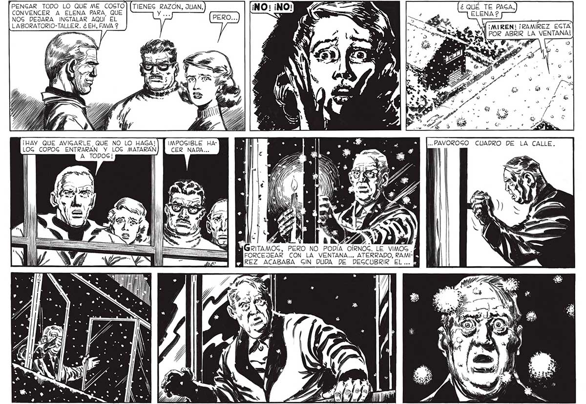

36 PENGAR TODO LO QUE ME COSTO CONVENCER A ELENA PARA, QUE NOG DEJARA INCTALAR AQUI EL LABORATORIO-TALLER. ¿ EH, FAVA 2 ¿ QUÉ TE PAGA, ELENA 2 ds MIÚGMIREN! ¡RAMIREZ EGTA POR ABRIR LA VENTANA! | 4 de O > ro a. ¡HAY QUE AVIGARLE QUE NO LO HAGA! IMPOGIBLE HALOG COPOG ENTRARAN Y LOG MATARAN CER NADA... A TODOS! " NY A ESOS E FAS ”. p : Y / 1 | E S ed ¿ES MGRITAMOS, PERO NO PODÍA OÍRNOG. LE VIMOS . FORCEJEAR CON LA VENTANA... ATERRADO, RAMI-[A PREZ ACABABA GIN DUDA DE DEGCUBRIR EL...) . $ Y
